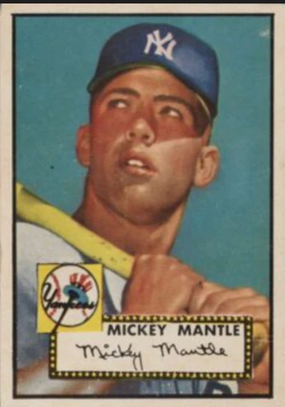

1952 Topps Mickey Mantle #311
The “king” of post-war baseball cards. It’s iconic, it’s Topps’ early era, and high-grade copies are insanely rare. This card is basically the hobby’s blue-chip stock.
Record reported sale: $12.6 million (Aug 2022, Heritage Auctions; SGC 9.5).